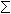

Problem 304
03 October 2010
For any positive integer n the function next_prime(n) returns the smallest prime p
such that p n.
n.
The sequence a(n) is defined by:
a(1)=next_prime(1014) and a(n)=next_prime(a(n-1)) for n 1.
1.
The fibonacci sequence f(n) is defined by:
f(0)=0, f(1)=1 and f(n)=f(n-1)+f(n-2) for n 1.
1.
The sequence b(n) is defined as f(a(n)).
Find b(n) for 1 n
n 100 000.
Give your answer mod 1234567891011.
100 000.
Give your answer mod 1234567891011.